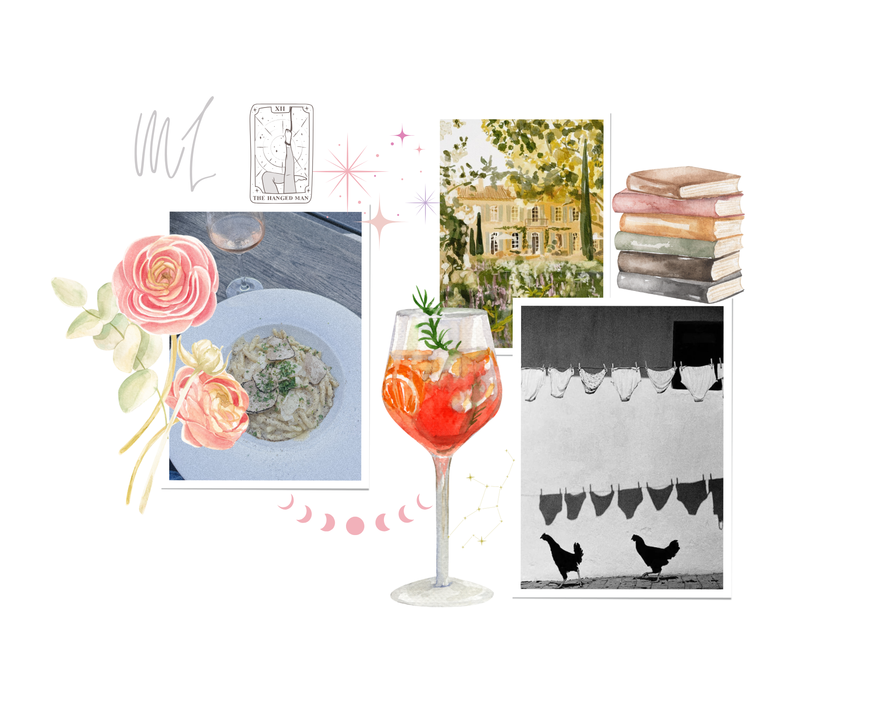

Hi, ich bin Marie, Zuhause in Hamburg, verliebt in den ersten Schluck Kaffee am Morgen, in Räume mit Seele und in Geschichten, die bleiben, wenn der Tag längst vergangen ist. Ich habe diese Website komplett allein gecoded, jede Zeile HTML und Javascript ist von mir, darauf bin ich sehr stolz.
Hi, I’m Marie, at home in Hamburg, in love with the first sip of coffee in the morning, with rooms that have a soul, and with stories that linger long after the day has passed. I built this entire website from scratch — every line of HTML and JavaScript was written by me, which I am super proud of.
PROUST QUESTIONNAIRE
1. Deine liebste Tugend: Liebe
2. Deine liebsten Eigenschaften an einem Mann: Freundlichkeit, Intelligenz, Humor, Loyalität.
3. Deine liebsten Eigenschaften an einer Frau: Die gleichen wie bei Männern.
4. Deine Lieblingsbeschäftigung: Schönheit und Harmonie in der Welt um uns herum suchen, staunen.
5. Dein Hauptcharakterzug: Neugierde.
6. Deine Vorstellung von Glück: Morgens auf dem Balkon mit einem frischen Kaffee und Croissant eine Zeitung lesen. Mit meinen Freundinnen lachen. Mit Sébastien schrumpelig werden.
7. Deine Vorstellung von Unglück: Geduldig sein müssen.
8. Deine Lieblingsfarbe und -blume: Dutch Blue und Ranunkeln.
9. Wenn du nicht du selbst wärst, wer wärst du: Ein Golden Retriever im Park.
10. Wo würdest du gerne leben: Umbrien.
11. Deine liebsten Prosaschriftsteller:innen: Sally Rooney, Dolly Alderton, Elisabeth Rank.
12. Deine liebsten Dichter:innen: Friedrich Schiller, Charles Bukowski, Andrea Gibson.
13. Deine liebsten Maler und Komponisten: Andie Dinkin, Allessandro Allessandroni.
14. Deine liebsten Helden im wirklichen Leben: Männer, die aufstehen, wenn eine Frau den Raum betritt/ verlässt (oldschool, ich weiß...).
15. Deine liebsten Heldinnen im wirklichen Leben: Meine Mama.
16. Deine liebsten Helden in der Literatur:
Kontakt
E-MAIL LOVELETTER

Der Proust-Fragebogen ist eine Reihe von Fragen, die durch den französischen Schriftsteller Marcel Proust berühmt wurden. Obwohl er ihn nicht selbst erfunden hat, wurde er vor allem für seine Antworten darauf bekannt. Proust ist vor allem für sein monumentales Werk À la recherche du temps perdu (Auf der Suche nach der verlorenen Zeit) in Erinnerung geblieben – ein in sieben Bänden zwischen 1913 und 1927 erschienenes literarisches Meisterwerk, das ich Ihnen sehr ans Herz legen kann, falls Sie es noch nicht gelesen haben. Zwei Fassungen von Prousts Antworten auf diese „Confession-Album“-Fragen sind erhalten geblieben. Die erste, aus den Jahren 1885–1886, stammt aus einem englischen Album, das Proust jedoch auf Französisch beantwortete. Die zweite, aus den Jahren 1891–1892, entstammt einem französischen Album mit dem Titel Les confidences de salon („Salongespräche“), in dem die Fragen übersetzt und teilweise verändert wurden. Ich habe mich entschieden, den ersten Fragenkatalog zu beantworten, der ursprünglich auf Englisch verfasst wurde. Proust war überzeugt, dass diese Fragen das wahre Wesen eines Menschen offenbaren können. Ich hoffe, meine Antworten geben Ihnen einen kleinen Einblick in meines.